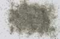

|
DOCUMENTATION_FORMAT: MINERAL
SAMPLE_ID: HS179.1B, HS179.2B, HS179.3B, HS179.4B, HS179.6
MINERAL_TYPE: Phyllosilicate
MINERAL: Chlorite (Chlorite group)
FORMULA: (Mg,Fe)3(Si,Al)4O10(OH)2-(Mg,Fe)3(OH)6
FORMULA_HTML: (Mg,Fe)3(Si,Al)4O10(OH)2-(Mg,Fe)3(OH)6
COLLECTION_LOCALITY: Colorado
ORIGINAL_DONOR: Hunt and Salisbury Collection
CURRENT_SAMPLE_LOCATION: USGS Denver Spectroscopy Laboratory
ULTIMATE_SAMPLE_LOCATION: USGS Denver Spectroscopy Laboratory
SAMPLE_DESCRIPTION:
A spectrum for this sample was published in: Hunt, G.R., J.W. Salisbury, 1970, Visible and near-infrared spectra of minerals and rocks: I. Silicate minerals. Modern Geology, v. 1, p. 283-300.
With the note: "This specimen appears to be quite pure. The spectrum displays three broad bands between 0.7 and 1.1µm. The bands at 0.7µm (barely discernible in this spectrum but very marked in the following sample (HS197) and at 0.9µm are due to Fe3+ in six fold coordination. The band near 1.1µm is due to the ferrous ion in six fold coordination. The sharp features at 1.4µm and between 2.0 and 2.6 µm are hydroxyl bands as in previous samples."
For additional information on spectral features of chlorites see: King, T.V.V. and R.N. Clark, 1989, Spectral Characteristics of Chlorites and Mg-Serpentines Using high-Resolution Reflectance Spectroscopy. Jour. Geophys. Res., 13,997-14,008.
Grain size fractions are indicated by the extension after the sample number:
.1B = <5 µm
.2B = <74 µm
.3B = 74-250 µm
.4B = 250-1200 µm
.6 = cut slab
IMAGE_OF_SAMPLE:

END_SAMPLE_DESCRIPTION.
XRD_ANALYSIS:
40 kV - 30 mA, 7.0-9.5 keV
File: chlor179.mdi, *.out
References: Bailey (198-, MSA vol.13, p.557); Huebner's reference patterns
Found: Tri-octahedral mica, trace 7 or 14 Angstrom phase, and an un indexed
weak reflection at 3.71 Angstroms
Comment: The mica could be indexed as a 1M phlogopite; the pattern is very similar to biotite MBLM. Reflections at 7.2 and 3.54 Angstroms are consistent with a chlorite or a kaolinite mineral. No 14 Angstroms reflection was observed.
END_XRD_ANALYSIS.
COMPOSITIONAL_ANALYSIS_TYPE: None # XRF, EPMA, ICP(Trace), WChem
COMPOSITION_TRACE: None
COMPOSITION_DISCUSSION:
END_COMPOSITION_DISCUSSION.
MICROSCOPIC_EXAMINATION:
Basal cleavage, low relief, slight pleochroism, 1st order gray, biaxial (-), 2V= 10 degrees, twins, all consistent with chlorite. G. Swayze.
END_MICROSCOPIC_EXAMINATION.
SPECTROSCOPIC_DISCUSSION:
END_SPECTROSCOPIC_DISCUSSION.
SPECTRAL_PURITY: 1b2_3_4_ # Chlorite HS179.1B # 1= 0.2-3, 2= 1.5-6, 3= 6-25, 4= 20-150 microns
SPECTRAL_PURITY: 1b2_3_4_ # Chlorite HS179.2B # 1= 0.2-3, 2= 1.5-6, 3= 6-25, 4= 20-150 microns
SPECTRAL_PURITY: 1b2b3b4u # Chlorite HS179.3B # 1= 0.2-3, 2= 1.5-6, 3= 6-25, 4= 20-150 microns
SPECTRAL_PURITY: 1b2_3_4_ # Chlorite HS179.4B # 1= 0.2-3, 2= 1.5-6, 3= 6-25, 4= 20-150 microns
SPECTRAL_PURITY: 1b2_3_4_ # Chlorite HS179.6 # 1= 0.2-3, 2= 1.5-6, 3= 6-25, 4= 20-150 microns
{kind=link}